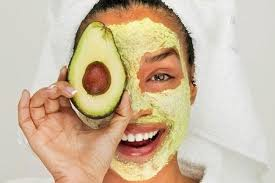
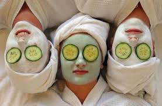

|
WELCOME TO MY WEB SHARE YOUR PERSONAL BEAUTY. STAY INSPIRED Hallo Girl ! Kalian mau terlihat cantik? Cantik itu gak perlu mahal, cukup dengan memanfaatkan bahan-bahan yang ada disekitar kamu dan sangat mudah untuk mendapatkannya. Cantik itu simple, yaa sama seperti judul diweb aku ini. aku akan share beberapa tips perawatan untuk wajah. Kalian ga perlu kawatir tips yang akan aku share gak perlu mengeluarkan biaya mahal, tanpa bahan kimia tetapi menggunakan bahan alami. berikut tipsnya : ALPUKAT  Alpukat sering dikonsumsi dengan cara dibuat jus atau pelengkap es campur. Selain nikmat dikonsumsi, alpukat juga menyimpan sejuta manfaat. salah satunya untuk menjaga kulit tetap sehat. Alpukat juga kaya akan vitamin E. Tidak hanya membuat kulit menjadi lembab, alpukat dapat mencegah kulit mengalami penuaan dini. Cara membuat masker alpukat : Ambil satu buah alpukat yang segar dan cukup matang. Hancurkan dengan menambahkan satu sendok makan madu. Aduk hingga membentuk pasta. jika terlalu kental, pasta bisa ditambah dengan sedikit air matang. Oleskan pada wajah atau kulit dan biarkan beberapa saat, kurang lebih selama 10 sampai 15 menit. Kemudian bilas dengan menggunakan air hangat dan tepuk-tepuk dengan handuk yang lembut dan bersih. MENTIMUN  Mentimun atau yang biasa disebut dengan timun adalah salah satu jenis labu-labuan yang dapat menghasilkan buah yang dapat dimakan. Biasanya mentimun digunakan sebagai penyegar atau lalapan dalam sebuah hidangan. Timun sendiri memiliki kandungan air yang tinggi sehingga sering digunakan sebagai penyegar. Bagi kamu yang memiliki kantung mata atau yang biasa disebut mata panda mentimun ini bisa jadi solusinya. Caranya gampang banget Pertama siapkan satu buah mentimun yang sudah bersih lalu dinginkan. Setelah itu potong tipis seperti pada gambar diatas. letakan diarea mata kurang lebih 15 sampai 20 menit. lalu bersihkan menggunakan handuk dan air hangat. AIR MINERAL
Rutin mengkonsumsi air putih memberikan dampak yang baik bagi tubuh karena dapat mengeluarkan toksin didalam tubuh melalui keringat, buang air kecil, buang air besar dan lain-lain. Jangan kurang atau lebih dalam mengonsumsi air putih atau sama dengan 8 sampai 10 gelas setiap harinya agar kulit tetap cantik dan sehat selalu. Manfaat air putih untuk kecantikan wajah yaitu dapat melembabkan, mencegah penuan dini.
|
Copyright © 2017 by Dwi Yuniarti All Rights Reserved. |